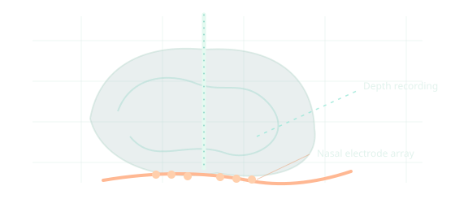

DOCTORAL RESEARCH · IN PROGRESS
Transnasal stimulation & depth-resolved neural recording
Developed an in vivo mouse platform combining a 32-site nasal stimulation array and 64-channel intracerebral recordings to characterize stimulation-evoked activity across recording depths. Current work examines response timing, stimulation parameters, and anatomical correspondence—not yet selective deep-brain activation.

DOCTORAL RESEARCHConceptual schematic; replace with an approved image from your study.
PROJECT OVERVIEW
From idea to evidence.
My contribution
Designed and integrated a preclinical stimulation–recording workflow, including nasal electrode configurations, stereotaxic neural recordings, data quality controls, and analysis tools.
Findings & significance
Recorded depth-resolved stimulation-evoked activity across the mouse brain. Observed short-latency responses in deep recording channels; the degree of anatomical targeting and selectivity remains under investigation.